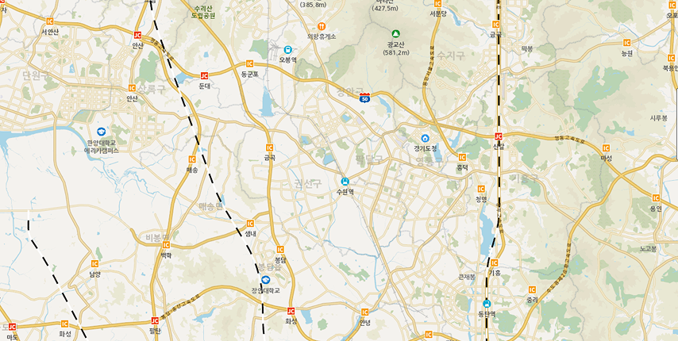
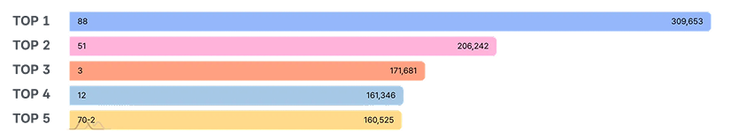
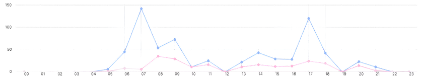
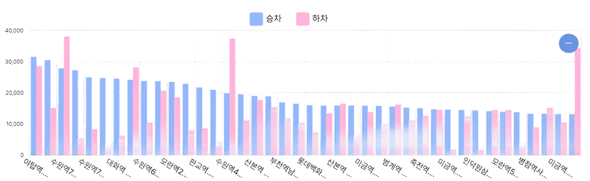

홈
분석 모델
공공버스
공공버스 현황판
공공버스 현황판
검색 필터
이용가이드
검색 필터
시·군·구
경기도
수원시
수원시 장안구
행정동
전체
남면
북면
분석기간
2025년
2024년
2023년
1월
2월
3월
초기화
분석하기
전체 이용객 현황
전체 승객 수
11,825,002명
승차 이용객
5,958,695명
하차 이용객
5,866,307명
지역별 정류소별 이용 현황

이용 인구 (월합계)
닫기
8,001명 이상
6,001명 ~ 8,000명
4,001명 ~ 6,000명
2,001명 ~ 4,000명
2,000명
버스 노선 현황
노선 현황
5,612개
정류소 현황
37,651개
이용객수 상위 노선

노선별 이용 현황
공영학운
공영학운
공영학운
전체 이용객 수
3,239명
성인
3,105명
청소년
131명
어린이
3명
시간대
선택됨
요일
월별
시간대

요일
요일 차트
월별
월별 차트
정류소별 이용 현황
전체 이용 현황
주중 이용 현황
주말 이용 현황

검색 필터
시·군·구
경기도
수원시
수원시 장안구
행정동
전체
남면
북면
분석기간
2025년
2024년
2023년
1월
2월
3월
초기화
분석하기
닫기